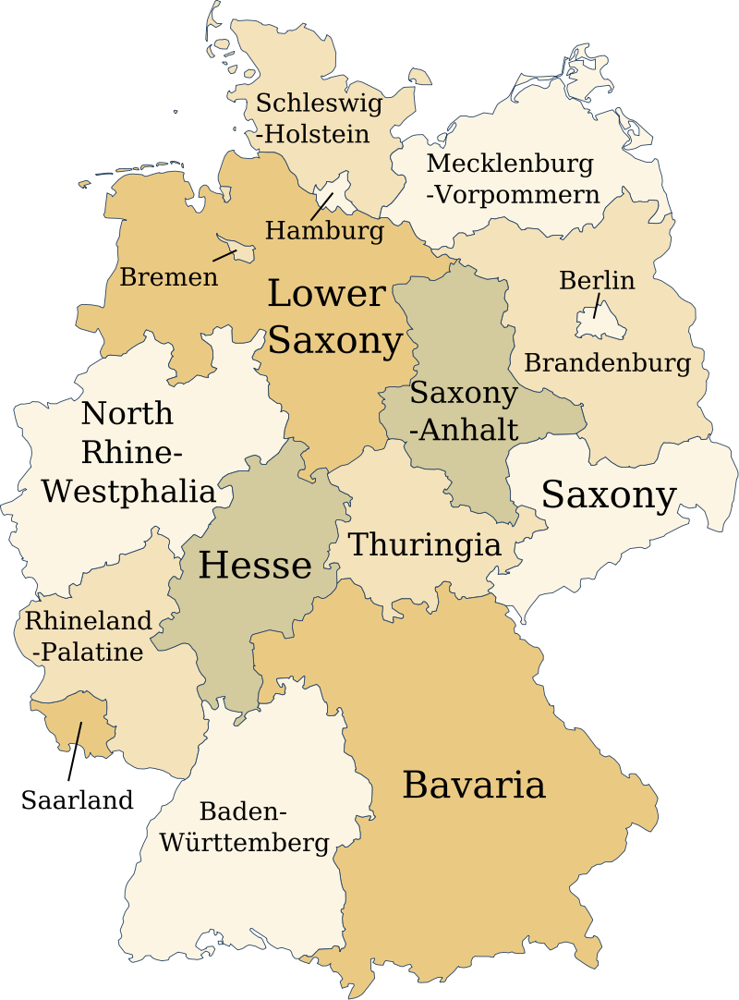

The American state flags
The United States has 50 first- level subdivisions, the states that make up the country. Each of them has its own flag.

The US states are infamous for their 'seal on a bedsheet' flags which are flags that only consist of a monochrome banner with the state seal in the center. You can see four examples above. This is not regarded as a good flag design practice since it's really uncreative and they are not easy to distinguish. However, there are also some really well- made flags like these ones:
The Korean province flags
The republic of Korea (commonly referred to as South Korea) is divided into 16 first- level subdivions. They have ... interesting flags that might remind some more of logos than actual flags. That being said, if you know how to read Hangeul, the Korean alphabet, you're gonna have an easy time playing this quiz since most flags have the name of the province they belong to written on them. if you don't, well then probably not so much :D
The Canadian flags
Canada is divided into ten provinces and three territories. Their flags resemble the vivid history of the country and the different cultural influences the regions were subject to and even though they are right next to the US, their style is vastly different from the state flags of their neighbor.
close
The Canadian flags

Germany is comprised of 16 states, 3 of which (Berlin, Bremen and Hamburg) are city states. Until 1990, there were two German countries, East and West Germany. After the socialist regime in the East collapsed, Germany was reunified and the new states that had joined Western Germany received new flags, so some of these flags are actually quite young. The others however, can also not be considered particulary old since most of them got adopted after WWII. This quiz shows all flags in the 'state version', meaning with the coat of arms of their respective state on them but most flags also have a 'civil version without a coat of arms'.
close
The Australian flags
Australia consists of 6 states and 2 territories. It also owns several offshore territories like the Cocos Islands for example, but these are not included here since they are not proper incorporated subdivisions of Australia. The Most Australian state and territory flags are similar to the national flag, which features a UK flag in the canton and the Southern Cross in the field.
Flag of Australia
Most Australian subdivision flags got adopted towards the end of the 19th century, but some are from the mid- 20th century.
close
The Japanese prefecture flags
Japan is divided into 47 first- level administrative divsions called "都道府県" which is usually translated as "prefectures". Their flags have a relatively consistent design philosophy: A symbol, a Mon (a Japanese emblem) or a stylized character of the Japanese writing system (sometimes everything at once) on a monochrome banner. I can't give you examples here because that would reveal the answers to the flags (and therefore give you free points :D), but here is an overview of all flags and their hidden meanings.
close
The Soviet SSR flags
The Soviet Union was a union of so- called 'Soviet Socialist Republics' which nominally were all equal but de facto ruled by the Russian SSR. Their flags are jokingly called 'copy & paste' flags because they are all a modified version of the national flag of the Soviet Union:
After the collapse of the Soviet Union, all post- soviet countries changed their flag to a completely different design than what their SSR flag had been, except for one (and after plaing this quiz, you will probably know whihc one).
Note: The Karelo-Finnish SSR, a lesser known SSR, only existed from 1940–1956 and its flag was in use from 1953–1956